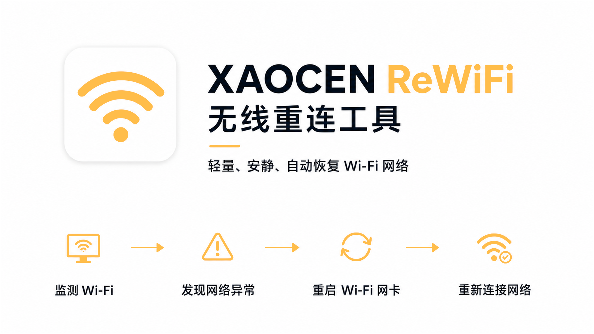

XAOCEN ReWiFi
用于持续监测 Windows 当前 Wi‑Fi 状态，并在网络异常时自动重启 Wi‑Fi 与重新连接。
专注于稳定、安静的后台运行，让重要的网络任务保持顺畅进行。
XAOCEN ReWiFi 是一个轻量的 Windows Wi‑Fi 自动恢复托盘工具。它持续读取 Windows 自己维护的网络状态，在指定 Wi‑Fi 出现持续异常时，自动关闭并重新开启 Wi‑Fi 网卡，然后连接 Windows 已保存的 Wi‑Fi Profile。
程序不保存 Wi‑Fi 密码，不管理代理软件。XAOCEN Account 仅提供可选的账号登录、会话恢复和退出；其他设备在 Account 网页中管理。本版本不提供会员、权益查询、离线激活或摄像头扫码。发布构建使用正式遥测入口，测试构建可切换到隔离测试环境；基础运行统计默认启用，增强匿名分析与匿名崩溃报告独立设置，崩溃报告默认关闭。用户可明确选择禁止所有数据上传。
永久免费：全部网络恢复功能无需登录或激活。账号中心提供可选登录和退出，方便账号识别和反馈。断网时可直接使用。
功能概览
程序启动后隐藏主窗口，仅在 Windows 托盘运行：
恢复完成后进入 30 秒冷却并继续监听。设置窗口使用 ReWiFi 图标和流程说明，帮助用户直观看到程序的工作方式。
环境
- Windows 10 / Windows 11
- WinForms
- .NET 10 SDK（仅从源码构建需要）
程序需要管理员权限，因为恢复流程需要启用或禁用 Wi‑Fi 网卡。开机启动使用 Windows 任务计划程序，并以最高权限运行。
跨电脑使用要求
独立 EXE 可以直接复制到其他电脑，但不适用于所有设备：
- 支持 Windows 10 / Windows 11；
- 目标电脑应为 Intel/AMD x64 架构；
- 运行时需要允许管理员权限；
- 目标电脑必须存在可用的 Wi‑Fi 网卡；
- 目标 Wi‑Fi 必须先在该电脑上手动连接，并由 Windows 保存 Profile。
不支持安卓手机、iPhone、macOS、Linux 等非 Windows 设备。移动 EXE 不会携带原电脑的配置；换到新电脑后，需要重新设置目标 Wi‑Fi 和网卡名称，开机启动任务也需要在新电脑重新创建。
编译
dotnet build .\XAOCEN-WiFiFix.sln -c Release
dotnet publish .\src\WiFiFix\WiFiFix.csproj -c Release -r win-x64 --self-contained true -p:PublishSingleFile=true -p:IncludeNativeLibrariesForSelfExtract=true -p:EnableCompressionInSingleFile=true -o .\build\v2.3-release输出文件名为 XAOCEN-ReWiFi.exe。自包含便携版本，目标电脑不需要另外安装 .NET 10。
使用与协议
用户协议和隐私说明可从程序托盘菜单或设置页面查看。在线入口由客户端根据网络状态打开官网版本或内置副本。
使用
- 先通过 Windows Wi‑Fi 菜单连接一次目标网络，让 Windows 保存该 Wi‑Fi Profile。
- 以管理员身份运行
XAOCEN-ReWiFi.exe。 - 右键托盘图标打开“设置”；设置窗口会在任务栏显示独立的 ReWiFi 图标，便于从其他窗口后方找回。
- 在“网络恢复”区域点击“自动识别当前连接”，程序会自动填入当前 SSID 和 Wi‑Fi 网卡名称。
- 保存设置即可。默认异常等待 5 秒、恢复冷却 30 秒、自动恢复和开机启动均开启。
托盘菜单顶部保留产品名称、版本、状态、立即恢复、自动恢复和开机启动；其余入口已分组为“设置”“账号中心”“文档与帮助”和“帮助与反馈”。“产品介绍与使用帮助”会在在线时打开官网，无法联网时打开内置离线副本。每次构建会自动生成内部构建号，用于识别同一公开版本的新构建，但普通界面仍只显示 2.3。设置窗口与账号中心默认使用 1040×900，并支持调整大小、最大化、DPI 自动缩放以及小屏滚动回退；设置页面将账号、网络恢复、帮助与文档、隐私与统计分别集中展示。
可选账号登录
登录由 XAOCEN Account 官网完成，访问令牌只保存在内存，刷新令牌保存在 Windows Credential Manager。登录失败、退出账号或断网不影响网络恢复。需要切换浏览器账号时，请在账号中心先选择“取消登录”，再重新发起登录；关闭账号中心也会停止当前轮询。反馈网页可能需要另行登录。本版本不提供会员、离线激活和摄像头扫码。
网络判断
程序每 2 秒读取指定无线网卡的本地 Windows 状态，正常时不主动访问互联网。Windows 状态异常持续设置的秒数后，程序才会并行执行两个轻量 HTTPS 探测：
- Google 与百度都可达：认为外网正常，不重启 Wi‑Fi。
- 一个可达、一个不可达：可能是代理规则或代理链路问题，不重启 Wi‑Fi。
- 两个都不可达：认为实体 Wi‑Fi 可能异常，执行一次 Wi‑Fi 恢复。
- Wi‑Fi 物理断开、SSID 消失或网卡禁用：直接进入恢复流程。
程序不会操作代理软件。Google 和百度探测使用直连，并明确绕过系统代理以及 HTTP_PROXY、HTTPS_PROXY、ALL_PROXY 环境变量。探测只读取响应状态，不保存网页内容、Cookie、账号、Token 或密码。
日志与配置
托盘菜单提供“查看运行日志”。
日志文件：
%LOCALAPPDATA%\XAOCEN ReWiFi\runtime.log匿名遥测状态和待上传队列：
%LOCALAPPDATA%\XAOCEN ReWiFi\telemetry\state.json
%LOCALAPPDATA%\XAOCEN ReWiFi\telemetry\queue.json基础运行统计仅记录首次运行、启动、版本更新和核心激活规模，不上传系统版本、架构、网络或设备详情。遥测不要求 XAOCEN Account 登录，不上传账号、令牌、授权内容、SSID、网卡名称、MAC、IP、完整日志或文件内容。正式版设置页可单独勾选增强匿名分析和匿名崩溃报告；选择禁止所有数据上传后，这两个选项会暂时停用，且不会产生、缓存或发送任何遥测事件。
配置文件：
%LOCALAPPDATA%\XAOCEN ReWiFi\config.json账号刷新令牌和设备登记密钥保存在当前 Windows 用户的 Credential Manager：XAOCEN.ReWiFi/auth.xaocen.studio、XAOCEN.ReWiFi/offline-device-key。替换 EXE 不会清空账号会话凭据；历史版本留下的 offline-license.xaocen-license 文件不会被自动删除，但 v2.3 不读取它，也不以它判断功能可用性。
本地产品介绍页面：
%LOCALAPPDATA%\XAOCEN ReWiFi\XAOCEN-ReWiFi-介绍.html限制
目标 Wi‑Fi 必须已经由当前 Windows 用户保存过 Profile。Google 或百度可能受到代理规则、域名策略或服务故障影响，因此“一成功一失败”只记录为部分可达，不会据此重启 Wi‑Fi。
更新日志
v2.3 · 2026-09-14
- 修复正式发布构建中增强匿名分析、匿名崩溃报告和禁止所有统计上传无法选择的问题。
- 账号登录增加“取消登录”；切换浏览器账号时可取消旧请求后重新登录，关闭账号中心也会终止轮询。
- 重构设置窗口和账号中心布局，取消悬浮按钮与固定内容挤压；窗口可调整大小，并在不同分辨率和缩放比例下自动适配。
- 两个窗口使用独立滚动视口和最小内容高度；上下缩小窗口时显示右侧滚动条，恢复高度后自动隐藏。
- “打开账号中心”收回账号信息卡片，“保存”固定在底部操作栏；额外空间优先分配给隐私说明，避免底部文字被裁切。
- 账号中心改为全局单一窗口，从设置页、托盘或重复点击进入时只会唤醒已有窗口。
- 删除与“退出账号”实际效果重复且容易误解的“撤销此设备”按钮；其他设备统一在 Account 网页管理。
v1.5 · 2026-08-22
- 修复
WifiController.IsAdministrator()在正式发布包中缺少System.Security.Principal.Windows程序集、导致自动恢复流程异常的问题。 - 固化
win-x64self-contained 单文件发布配置，并核对正式发布包的依赖完整性。 - 修复连通性探测继承本机代理的问题，探测现在绕过系统代理、
HTTP_PROXY、HTTPS_PROXY和ALL_PROXY环境变量。 - 增加回归测试，覆盖代理端口不可用、真实不可达、直连处理器和 Windows 权限程序集加载场景。
- 保留 v1.4 至 v0.1 的历史更新记录，并将本次工程修复、测试和发布结果记录为 v1.5。
v1.4 · 2026-08-22
- 全面应用 XAOCEN 品牌色彩规范。
- 使用新版
xaocen-rewifi.png作为本地产品介绍页主视觉。 - 统一橙黄、青靛、天蓝、青灰和中性色的使用职责。
- 更新设置窗口的背景、按钮、链接、文字和容器颜色。
- 更新本地 HTML 产品介绍页面的配色、主视觉和完整使用说明。
- 补充日志目录、配置目录、本地介绍页目录、编译和使用说明。
- 固定跨版本单实例互斥名称，避免旧版和新版同时操作 Wi‑Fi 网卡。
- 增加 GitHub 安全排除规则，避免本地配置、运行日志和构建产物进入仓库。
- 固化 win-x64 self-contained 单文件发布配置，确保 Windows 权限检测程序集随正式发布包携带。
- 修复连通性探测继承系统代理的问题，Google 和百度探测现在明确绕过系统代理与代理环境变量。
- 增加代理不可用、真实不可达和 Windows 权限程序集加载的回归测试。
- 保留 v1.3 至 v0.1 的历史更新记录，并补充 v1.4 当前版本说明。
v1.3 · 2026-08-21
- 应用名称更新为
XAOCEN ReWiFi。 - 中文名称确定为“无线重连”。
- 统一应用、程序集、文件属性、托盘菜单、日志和任务计划程序版本为
1.3。 - 替换 EXE、快捷方式和托盘使用的 ReWiFi 圆角图标。
- 在设置窗口加入图标和自动恢复流程说明，让无主窗口的托盘程序也能直观展示工作方式。
- 新增独立产品介绍文案，统一应用介绍、版本和开发者信息。
- 设置窗口功能展示区改为完整产品介绍，并加入 GitHub 项目主页链接。
- 开机任务更名为
XAOCEN ReWiFi，并自动清理旧的XAOCEN WiFiFix任务。 - 自动迁移旧版本地配置，保留已设置的 SSID、网卡、等待时间和恢复选项。
- 保留实体 Wi‑Fi 网卡判断、Google/百度 HTTPS 辅助判断、恢复冷却和运行日志功能。
v1.2 · 2026-08-15
- 完善运行日志、开机任务、配置保存和网络异常恢复流程；加入连通性探测相关功能。
- 开机任务自动创建和更新。
- 从旧版配置目录自动迁移配置。
- 解决旧版任务仍指向历史 EXE 的问题。
- 修复日志乱码问题。
v1.1 · 2026-08-12
- Wi‑Fi 断开或无 Internet 时自动恢复。
- Wi‑Fi 已连接但 Google、百度均不可达时自动重连。
- 一个网站可达、另一个不可达时，不立即重启，避免误伤代理链路。
- 运行日志和托盘“查看运行日志”。
- 自动识别当前 SSID 和 Wi‑Fi 网卡。
- 单实例运行，防止多个后台程序同时操作网卡。
v1.0 · 2026-08-11
- 完善运行日志、开机任务、配置保存和网络异常恢复流程；加入连通性探测相关功能。
- 诊断日志版本，增加启动路径、PID、任务路径和运行状态记录。
- 日志编码和乱码相关修正版。
- 加入 Google、百度连通性辅助判断。
- 针对网络探测、恢复流程、开机任务和稳定性进行修正。
v0.1 · 2026-08-10
- 基础功能：托盘常驻、单实例、配置文件、管理员权限、Wi‑Fi 自动关闭/开启/重连、异常等待、恢复冷却、开机启动。
项目与更新
项目更新和问题反馈请使用程序托盘菜单中的对应入口。